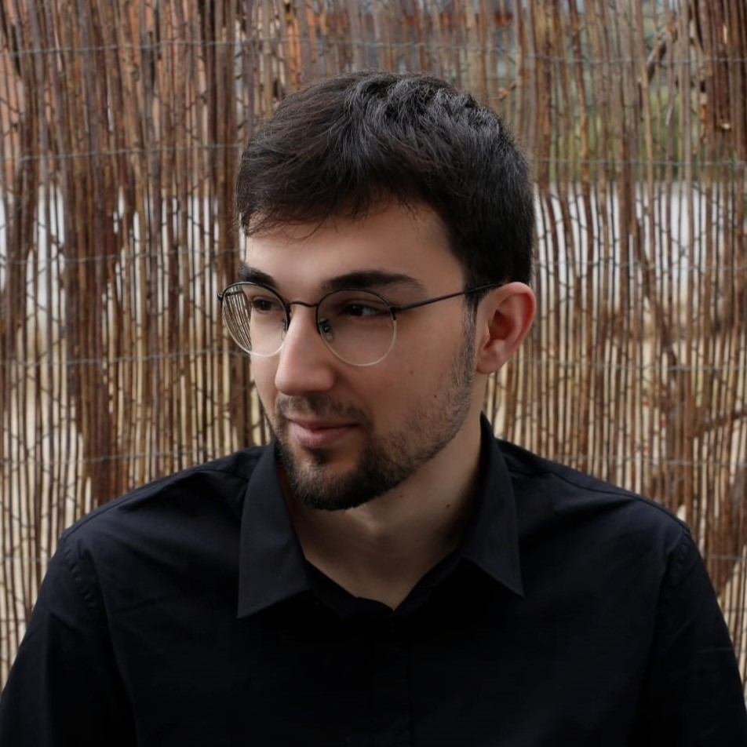

Aleix Nieto Juscafresa
PhD Student in Machine Learning.

I am a PhD student in Machine Learning at the Division of Systems and Control, Department of Information Technology, Uppsala University, supervised by Jens Sjölund. I am also a WASP PhD student in the WASP Graduate School (ML/X track, 2026 cohort). My research focuses on machine learning for breast cancer.
I hold a BSc in Mathematics from the University of Barcelona, with a minor in Statistics, and an MSc in Data Science (Machine Learning and Statistics) from Uppsala University. For my master’s thesis I developed graph neural network-based preconditioners to accelerate the GMRES algorithm — work I later continued as a research assistant in the same group, leading to a publication at the Northern Lights Deep Learning Conference (NLDL).
Before starting my PhD, I spent a year at KTH Royal Institute of Technology as a research engineer in the Division of Robotics, Perception and Learning, where I worked on a computer vision project: using diffusion-based generative models for plankton image classification within a marine environmental research project.
In my free time I enjoy hiking, travelling, and football.
Publications
See also my Google Scholar profile.
Diffusion representations for fine-grained image classification: a marine plankton case study
Learning incomplete factorization preconditioners for GMRES
Graph neural network-based preconditioners for optimizing GMRES
An introduction to explainable artificial intelligence with LIME and SHAP
Teaching
Teaching Assistant, Uppsala University.
During my time as a master’s student I was employed as a Teaching Assistant at the IT department of Uppsala University. As part of my PhD education I am working 20% on teaching duties.